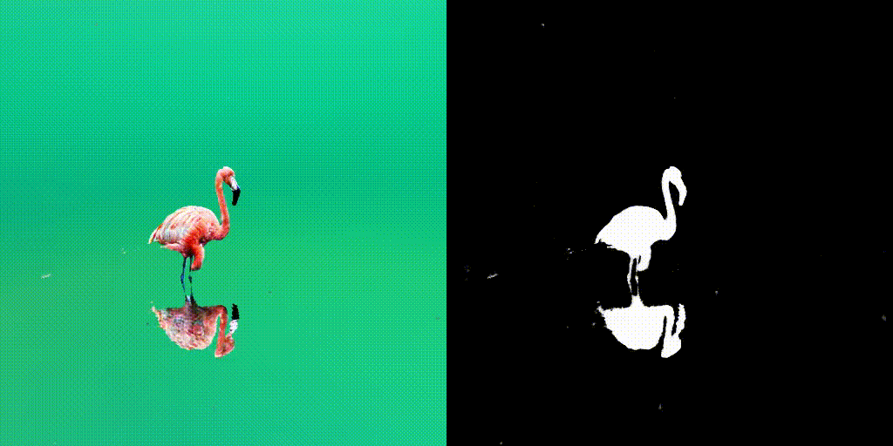
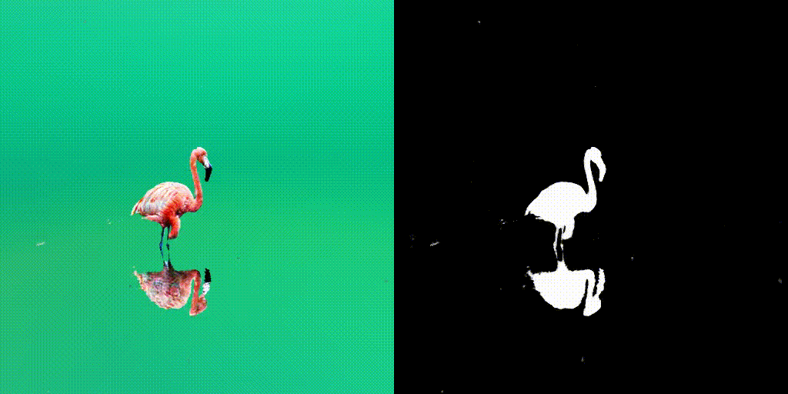
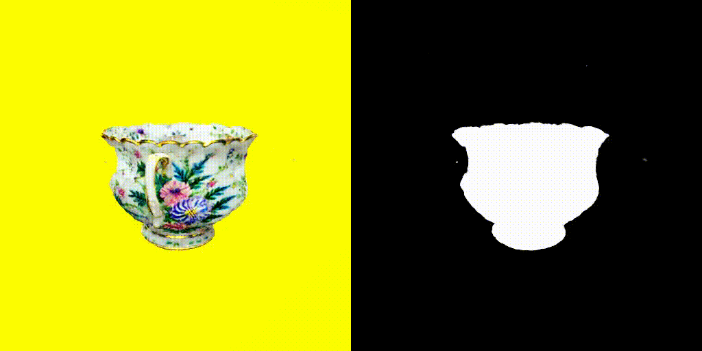
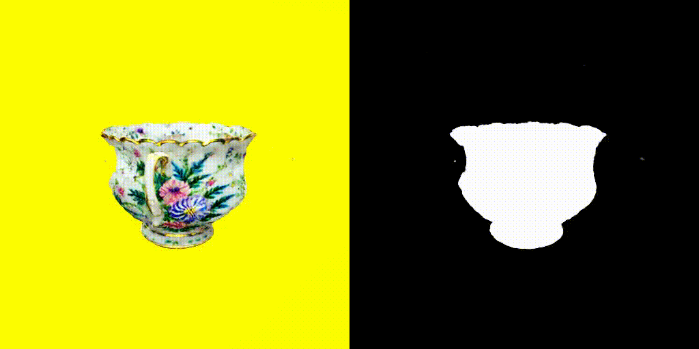
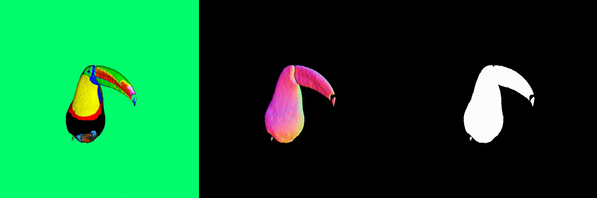
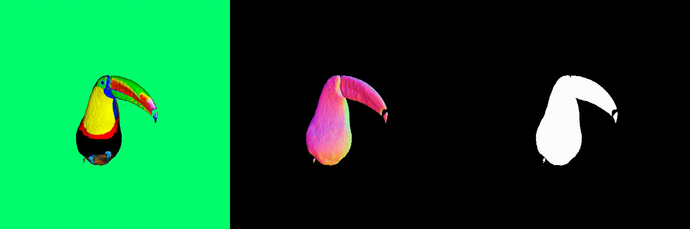

 



 



Abstract
Existing score-distilling text-to-3D generation techniques, despite their consider able promise, often encounter the view inconsistency problem. One of the most notable issues is the Janus problem, where the most canonical view of an object (e.g., face or head) appears in other views. In this work, we explore existing frameworks for score-distilling text-to-3D generation and identify the main causes of the view inconsistency problem—the embedded bias of 2D diffusion models. Based on these findings, we propose two approaches to debias the score-distillation frameworks for view-consistent text-to-3D generation. Our first approach, called score debiasing, involves cutting off the score estimated by 2D diffusion models and gradually increasing the truncation value throughout the optimization process. Our second approach, called prompt debiasing, identifies conflicting words be tween user prompts and view prompts using a language model, and adjusts the discrepancy between view prompts and the viewing direction of an object. Our experimental results show that our methods improve the realism of the generated 3D objects by significantly reducing artifacts and achieve a good trade-off between faithfulness to the 2D diffusion models and 3D consistency with little overhead.
Score Debiasing

When the perturbed-and-denoised image produced by diffusion models differs greatly from the rendered image in certain pixels, we often observe a high magnitude in the 2D score. This can result in the generation of unwanted elements like extra legs, beaks, horns, or faces. To tackle this issue, we apply a clipping technique to the 2D scores, removing these unnecessary artifacts. We start with a low threshold and progressively increase it, ensuring that we preserve the fine details of the shapes while getting rid of unwanted elements.
Prompt Debiasing

Despite "Back view of" given in the prompts, the word "smiling" in the prompt makes diffusion models biased towards the front view of objects. Thus, we remove the conflicting words in the prompts to make the prompts consistent with the viewing direction of an object. In specific, we calculate pointwise mutual information (PMI) to identify the conflicting words between the user prompts and the view prompts, utilizing a large language model.
Debiased-SDS Framework

Using the above two debiasing techniques, we propose a simple and efficient debiased score-distilling text-to-3D generation framework. First, we perform prompt debiasing to make the prompts consistent with the viewing direction of an object. Then, we perform score debiasing to remove the artifacts in the generated 3D objects. Note that our framework is easily applicable to any score-distilling text-to-3D generation framework, such as DreamFusion, SDS, Magic3D, etc. We provide an implementation of our techniques applied to the DreamFusion and SJC, which can be found on our official repository for D-SDS. For further details, please refer to our paper.